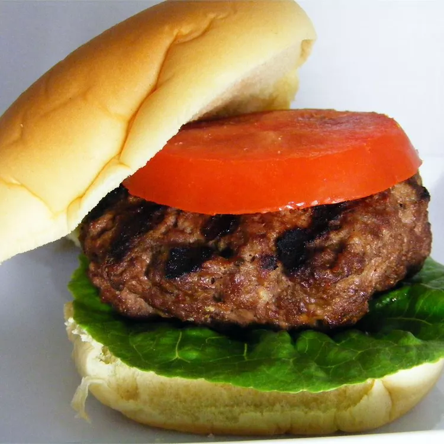

Hamburgers

Delicious Grilled Hamburgers
Try this easy grilled hamburger recipe for juicy, smoky burgers.
Serve on buns with your favorite toppings.
Ingredients
- 1 pound lean ground beef
- 1 tablespoon Worcestershire sauce
- 1 tablespoon liquid smoke flavoring
- 1 teaspoon garlic powder
- 1 tablespoon olive oil
- seasoned salt to taste
Directions
- Preheat an outdoor grill for high heat and
lightly oil the grate.
- Combine ground beef, Worcestershire sauce,
liquid smoke, and garlic powder in a medium bowl;
lightly mix until just combined. With minimal handling,
form mixture into three patties. Brush oil onto both
sides of each patty, then season with salt.
- Cook patties on the preheated grill until no
longer pink in the center, about 5 minutes per side.
An instant-read thermometer inserted into
the center should read at least 160 degrees F
(70 degrees C).
Back to homepage